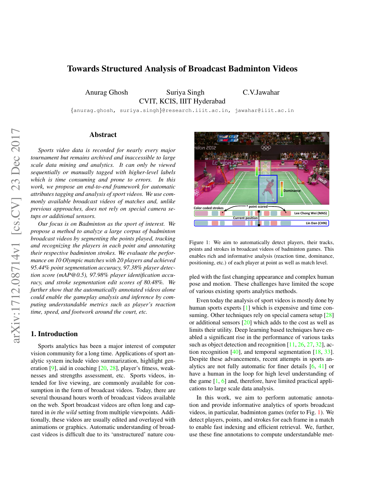
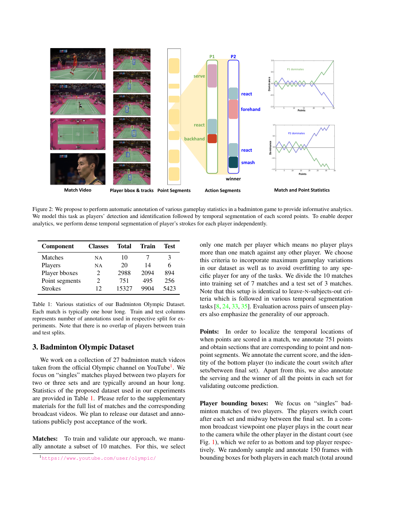
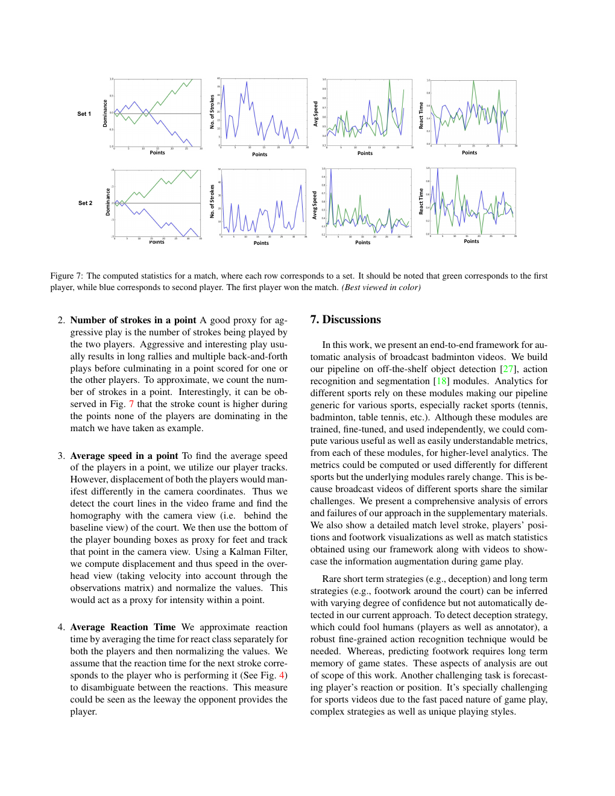

Towards Structured Analysis：广播羽毛球视频的结构化分析早期系统
会议 / 期刊：WACV 2018
发表日期：2018-02-28
资料加入日期：2026-05-17
一句话结论
这篇论文把羽毛球 broadcast video 从“录像”转成“可查询的结构化比赛数据”，是后续 TrackNet、ShuttleSet、TemPose、BST 之前的重要系统锚点。
论文定位
它补强 sources/2026-05-16-bst-badminton-stroke-type-transformer 的 related-work 前史：BST 关注 hit-frame-centered clipping、pose、shuttle trajectory 和 stroke-type classification；这篇 WACV 2018 工作更早定义了完整 pipeline：point segmentation → player detection / identification → stroke segmentation → player tactics analytics。
问题定义
公开羽毛球比赛视频数量很大，但人工观看和标注成本高。研究真正需要的是可索引的结构化数据：每个 point 什么时候开始结束、谁在打、球员在哪、打了什么 stroke，以及这些事件如何汇总成战术指标。
方法概述
系统分四层：
- Point segmentation：把 broadcast video 切成 point / non-point。
- Player tracking / identification：检测 top / bottom player，并结合场地位置和换边规则保持身份。
- Stroke segmentation：识别 serve、forehand、backhand、lob、smash、react 等动作片段。
- Analytics layer：计算 reaction time、dominance、average speed、court movement 等可解释指标。
数据与实验
论文使用 London Olympics 2012 的 10 场单打比赛：20 名球员、751 个 point segments、15,327 个 stroke labels。训练/测试按 7 场 / 3 场比赛划分，接近跨球员和跨比赛泛化评估。
主要结果：
| 模块 | 指标 |
|---|---|
| Point segmentation | F1 95.44% |
| Player detection | mAP@0.5 97.38% |
| Player identification | accuracy 97.98% |
| Stroke segmentation | edit score 80.48% |
关键图示

p1 展示目标输出：player tracks、points、strokes 和 color-coded stroke timeline。

p3 展示任务图谱和数据统计，能看出它同时处理 player tracks、point segments、action segments 和 match statistics。

p8 展示 dominance、reaction time、court movement、average speed 等 tactical metrics，说明结构化标注可以直接服务教练/分析师阅读。
关键发现
- 系统级结构比单一模型更重要：只有 point / player / stroke 都被结构化，后续战术和训练反馈才有基础。
- Stroke segmentation 是最难模块；这也解释了为什么后续 TemPose / BST 会把 hit window、pose 和 shuttle trajectory 加进来。
- 它已经把“反应时间、优势、站位、速度、步法”变成可计算指标，这和当前 badminton action-correction demo 的反馈目标高度一致。
局限或疑问
- 视觉与时序模型较早，和 VideoMAE / TrackMAE / skeleton Transformer 时代的表征能力差距明显。
- 10 场奥运比赛规模有限，跨场馆、跨转播风格、业余训练视频泛化仍需验证。
- 它输出的是比赛结构和动作片段，尚未进入“错误模式”和“教练式反馈”。
对当前 wiki 判断的影响
它让 questions/question-badminton-stroke-correction-demo 的第一步更清楚：demo 先不要急着做复杂教练系统，应先保证 rally / point、player side、hit frame 和 stroke segment 的结构化输出稳定。后续 sources/2026-05-16-bst-badminton-stroke-type-transformer 负责细化 stroke classifier，sources/2026-05-17-multisensebadminton-biomechanical-dataset 负责定义训练反馈上界。
原始材料
- raw entry：
raw/ingest/2026-05-17-structured-analysis-broadcast-badminton-videos/ raw/ingest/2026-05-17-structured-analysis-broadcast-badminton-videos/paper.pdfraw/ingest/2026-05-17-structured-analysis-broadcast-badminton-videos/paper-text.mdraw/ingest/2026-05-17-structured-analysis-broadcast-badminton-videos/analysis.mdraw/ingest/2026-05-17-structured-analysis-broadcast-badminton-videos/page-previews/raw/ingest/2026-05-17-structured-analysis-broadcast-badminton-videos/abstract.mdraw/ingest/2026-05-17-structured-analysis-broadcast-badminton-videos/links.yaml